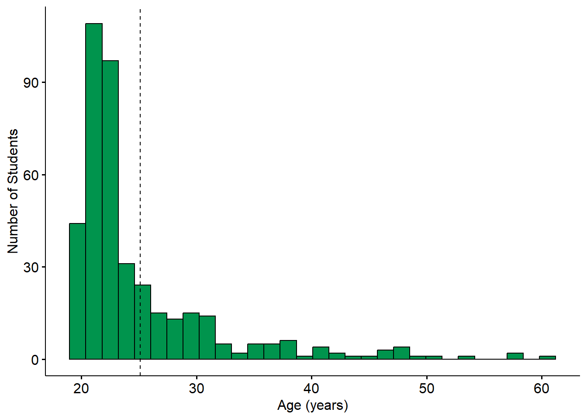
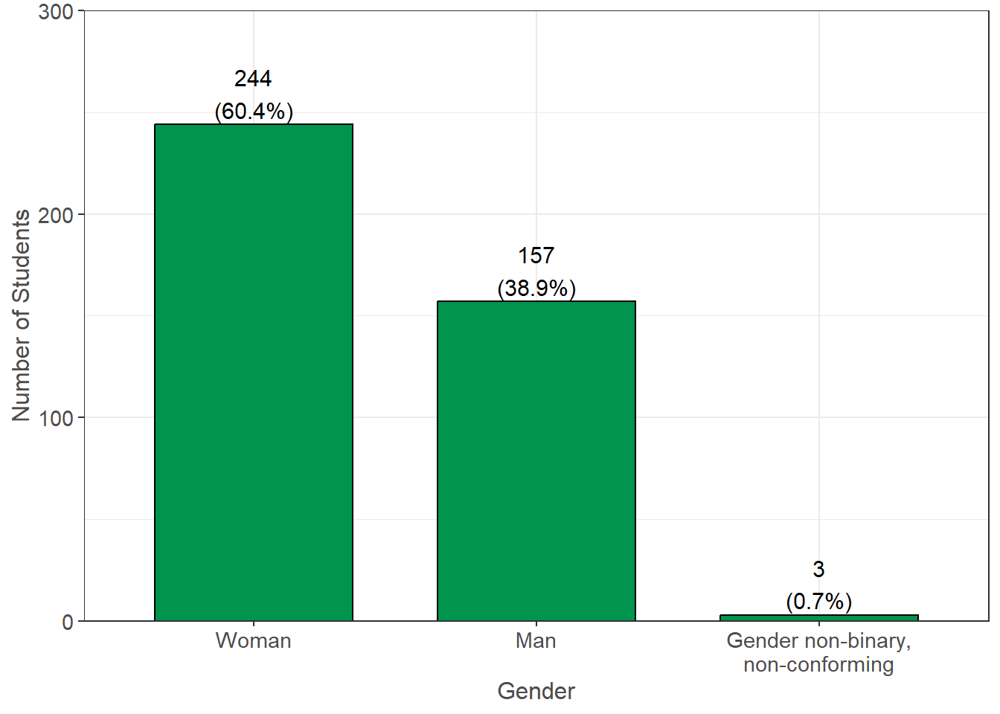
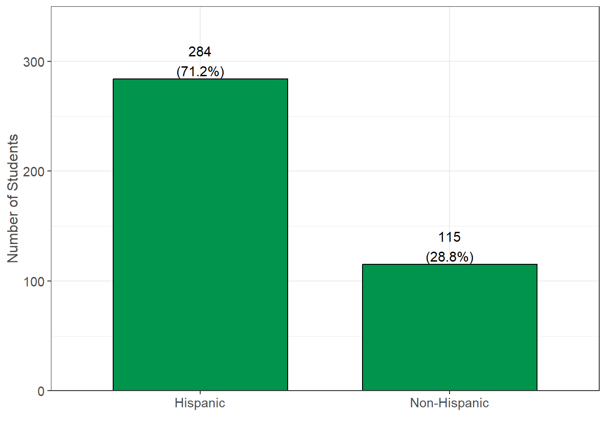
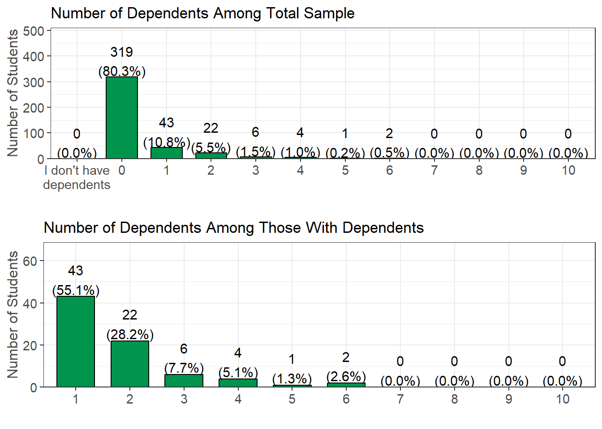
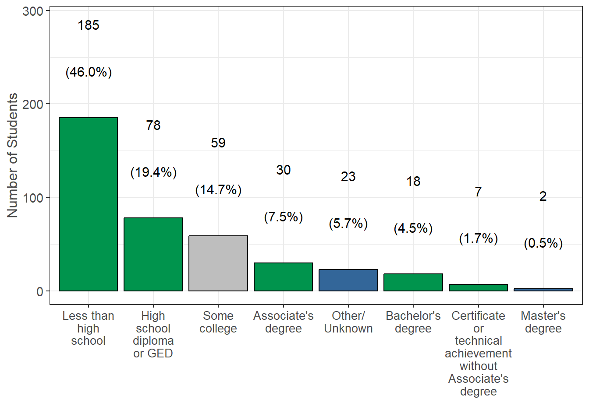
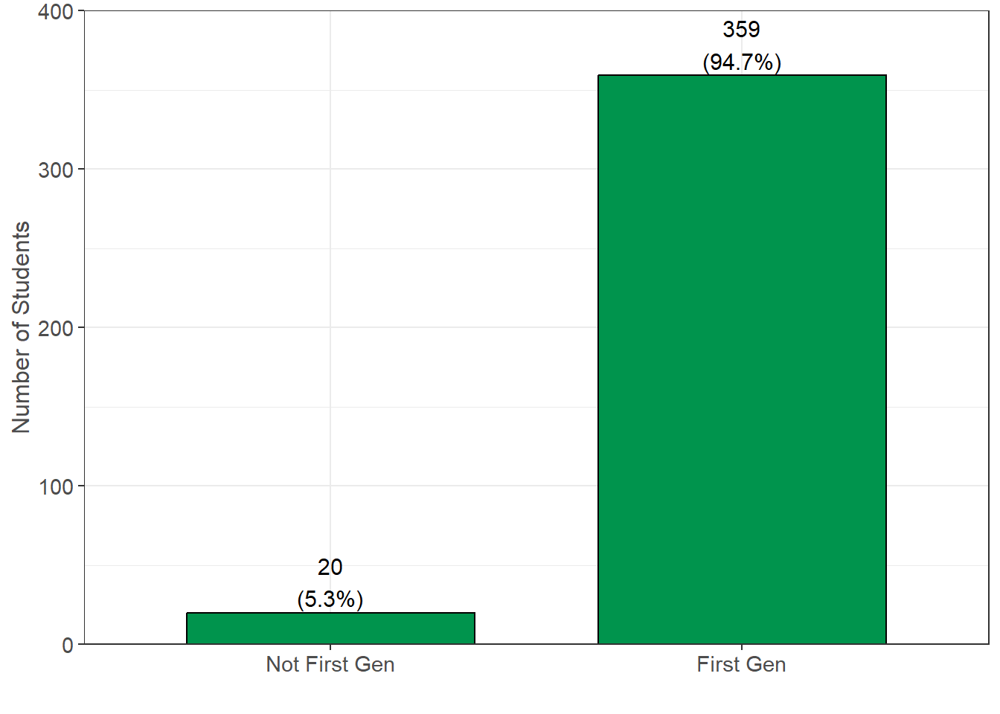

The following set of questions were asked in regards to the students’ personal demographics. This includes the students’ age at the time of the survey (2020), ethnicities they identify as, and the number of dependents they are responsible for taking care of. They were also asked about parents’ education, which will help us identify first generation college students based on certain criteria.
Age
The following was determined by taking the difference between birth date and the time at which the survey was completed (n=407, 100.0% of 407 reporting)
Survey Question: What is your date of birth?
Additional Notes: Student age was determined by the difference between birth date and the time in which the survey was completed. Values were rounded down to the nearest whole number.
Summary: The average age of the students was 25.1 years with a range of 19.1 to 59.9, and a median age of 22.5. A total of 1 (0.2%) students were 21 or older, and 0 (0.0%) students were 30 or older. Mean ages differed between campus types, where the mean age among CSU students was 25.1, compared to 25.1 among CCC students, and 25.1 among UC students.
Gender Identity

Survey question: What is your gender identity?
Summary: A total of 244 (60.4%) students identified as a woman, 157 (38.9%) identified as a man, 0 (0.0%) identified as gender non-binary, and 0 (0.0%) identified as queer/non-conforming.
Ethnicity (i.e. Identifying with Hispanic Origin)

Survey Question: Do you identify as Hispanic or Latino or Spanish Origin?
Additional Notes: Possible answers were pulled from the U.S. Census questionnaire assessing Hispanic Origin: Mexican; Mexican American; Chicano; Puerto Rican; Cuban; another Hispanic/Latino/Spanish origin; or not of Hispanic/Latino/Spanish origin.
Summary: A total of 284 (71.2%) students self-identified as having Hispanic Origins and 115 (28.8%) students self-identified as Non-Hispanic.
Race
| Identified Race | Yes (%) |
|---|---|
| White | 155 (38.1%) |
| Prefer not to answer race | 152 (37.3%) |
| Asian | 61 (15.0%) |
| Black or African American | 26 (6.4%) |
| American Indian and Alaska Native | 26 (6.4%) |
| Native Hawaiian and Other Pacific Islander | 6 (1.5%) |
Survey Question: What race do you identify as? (Select all that apply)
Additional Notes: Possible answers were pulled from the U.S. Census questionnaire assessing race: White, Black or African American, American Indian or Alaska Native, Chinese, Filipino, Asian Indian, Vietnamese, Korean, Japanese, Other Asian, Native Hawaiian, Samoan, Chamorro, and Other Pacific Islander. These 14 options were collapsed into the 5 broad U.S. Census groups due to small sample sizes in some groups.
Summary: A total of 155 (38.1%) students self-identified as White, 61 (15.0%) as Asian, 26 (6.4%) as Black or African American, and 6 (1.5%) as Native Hawaiian or Other Pacific Islander. Additionally, 152 (37.3%) students preferred not to answer race, likely due to confusion between race and ethnicity.
Dependents

Survey Question: If you have dependents, then how many of them receive more than 50% of their financial support from you?
Additional Notes: These rates differed between campus types. Among CSU students, 78 (19.6%) reported they have dependents receiving more than 50% financial support, compared to 78 (19.6%) among CCC students, and 78 (19.6%) among UC students.
Summary: Among the total sample, 0 (0.0%) students reported having no dependents, and 319 (80.4%) reported having dependents receiving less than 50% financial support. The remaining 78 (19.6%) students reported having dependents receiving more than 50% financial support. Of those with dependents receiving more than 50% financial support, 43 (55.1%) had one dependent, 22 (28.2%) had two, and 6 (7.7%) students had three dependents.
Parent Education

Survey Question: What is the highest level of education completed by your parents/guardians (for example, if your mother and father both raised you, and your mother has the highest level of education, then indicate her highest level of education)?
Additional Notes: This data is used to determine a student’s first-generation status. First-generation status is defined by neither parent having completed a bachelor’s degree or higher. The green bars represent first-generation categories, and the blue bars represent non-first-generation categories. Other/unknown responses are shown in gray.
Summary: A total of 359 (94.7%) students reported first-generation status based on their parent/guardian education level. This outcome is not surprising because all students in this study were either enrolled in EOP or EOPS and both programs recruit students with first-generation status. A total of 185 (46.0%) students reported their parents/guardians did not complete high school, while 78 (19.4%) reported the highest level of education completed by their parents was high school.
First-Generation

Survey Question: This variable was derived from the question in the Parent Education section.
Additional Notes: Students who selected their parents’ education as “Less than high school,” “High school diploma or GED,” “Some college,” “Certificate or technical achievement without Associate’s degree,” or “Associate’s degree” were considered first-generation. The 23 (5.7%) students who selected “Other/Unknown” were set as missing values. All other responses were considered not first-generation.
Summary: A total of 359 (94.7%) students reported first-generation status. As stated above, this outcome is not surprising because students in this study were either enrolled in EOP or EOPS, and both programs recruit students with first-generation status.